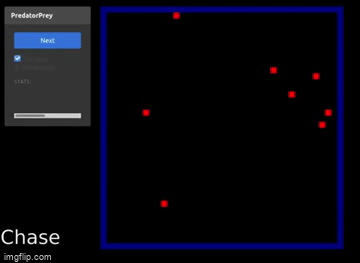

Projects
A relatively complete list of projects I have worked on. Includes papers for classes, personal projects, and a few things from hackathons. Mostly focus on some combinations of algorithms and cybersecurity (my favorite things!).
This Year:
Malware Sandbox with PANDA
For GeekPeek hackathon 2021, we were finalists!
- Wrote a malware analysis platform using panda-re doing all the analysis ourselves - was awesome, I learnt so much!
- Typical CTI focuses on IoCs and techniques - would it help analysts identify threats if we created a platform that described malware behavior?
- Create a queryable CTI platform
- Include behaviors in addition to IoCs
- Use dynamic and static analysis techniques
- Specs:
- PANDA - full system introspection
- Radare2, ioc_exract, pefile
- Clustered similiar samples from hybrid properties (both dynamic and static)
- Used sequences of calls to classify malware class (spyware, downloader, trojan, worms, adware, dropper, virus, backdoor), used octatak malware api class for training, used 1D Convolutional Neural Network with > 95% accuracy on validation data
- We were recognized for extracting behaviors (ie. ttps) in our static analysis from the binary itself - apparently thats novel (?)
It was for a hackathon so the interface is a bit rough. The malware analysis portion is more complete.
Cellular Automata for Anomaly Detection
Term Paper for Course on Biologically-Inspired Algorithms
Abstract: This paper describes the use of cellular automata paired with a generative neural network architecture for anomaly-based intrusion detection. The benchmark dataset ADFA-LD consisting of attack and benign Linux system-call traces was used to evaluate this method. Our results show that there was no improvement in the performance of this method compared to past research on this dataset.
- Basically we generate CA patterns for syscall sequences and use Generative NN to differentiate between normal and abnormal samples training them on CA patterns (which are just images)
- We do this with the assumption that there will be unique patterns for attack sequences
- This assumption did hold, however the results showed no significant improvement over past research, and there other downsides to using this method (space, resources, etc..)
js-mal-catcher
Detection of Malicious Javascript, Term paper for course "Machine Learning for Applications in Cybersecurity"
Abstract:Malicious JavaScript detection is vital to ensure a safe internet browsing experience. Obfuscation techniques have evolved in benign and malicious scripts in recent years, hindering detection efforts. We propose and evaluate a two-tier architecture that incorporates BERT embeddings in a Bi-LSTM neural network using features extracted from bytecode instructions that deem obfuscation irrelevant. While our method did not beat the baseline in all metrics, it scored a 98% f1 score without pretraining an embedding model, making it a viable solution when pretraining on a custom corpus is not feasible. Index Terms—machine learning, obfuscation, cybersecurity
- This was a fun but challenging course, I learned alot
- I did mostly the preprocessing and data collection steps
- We generated byecode instructions, and collected API call traces by overwriting built-in functions using v8 and puppeteer
- With these methods we were able to observe the functionality of the script, without performing deobfuscation, and both would highlgiht patterns of calls that may consistent with malicious javascript.
Exert:
The opposite effect was observed for the bytecode instructions, where benign calls produced over 16 times the amount of bytecode instructions compared to the malicioussamples, with over 99 million bytecode instructions captured, versus only 6 million for malicious scripts. This supports the assumption that while bytecode was able to describe the complete functionality of a sample, the API calls focus on functionality that may be helpful for the classification task. Because of this significant difference in the number of calls captured we must consider any features that appear more frequently in attack samples versus benign samples as significant. These include CallUndefinedReciever0 which appears 1.4 times more frequently in malicious samples than benign samples, and StaGlobal which appears 1.05 times more frequently in malicious samples than benign samples. In JavaScript the receiver is the object in which a property lookup occurs, thus the script is trying to reference an object that is yet to be defined. CallUndefinedReciever0 sets the feedback slot, in which the optimizer collects statistics about the types used. StaGlobal stores the value in the accumulator into the global object with the specified name inthe constant pool. The constant pool handles object caching. Both these instructions support the conclusion that the control flow of malicious scripts is different from benign scripts, and that on average malicious scripts make more calls in the global execution context.
fishtrace
Event tracing and introspection for Linux using libebpf
Written in golang, using grpc for event forwarding and mongodb for storage. Uses sockets and buffered queue to merge data streams from multiple sources. Used as a base model for other projects.
As shown below a 3-d force graph was used to visualize the relationships between processes, and between applications and files, resulting in a some interesting visuals. Nodes are scaled by number of syscalls they make. Different colors correspond to different types of objects (parent, child, file, etc.)
The most dense clusters are Firefox processes
AI Predator-Prey
A simple predator-prey simulation with Q-Learning and Deep Q-Learning.
In the single-agent environment, we have prey and food. The goal of the prey is to eat the food:
In the multi-agent environment, we have prey (green), predator (blue), and food (red). Below shows predators chasing prey:
Last Year:
GIS: Fossil Clustering
For a course in GIS, a rather trivial but well put together project.
An analysis of the clustering of Canadian Fossil Data
Started: Oct 2020, Finished: Dec 2020 Used: dash, numpy, geopandas
Implemeneted and analysed the following algorithms: Graham Scan, k-means, CLARANS, BIRCH, Agglomerative Hierarchical Clustering: Average, and Minimum Linkages, and DBScan
Honors Project: ebph testsuite
- ebpH TestSuite and Automation Server Done for my Honors Project, Fall 2020.
- Will provide a more detailed description at a later date.
- Involved repeatedly training and testing the ebpH Intrusion Detection System. Learned alot of valuable skills, the most important being how to approach defensive security from an offensive perspective. It was a very interesting project, the ebpH IDS is pretty neat. I also wrote a jenkins-like application for scheduling and logging. Below are some snapshots:
Older:
Magneto: Anomaly Detection in Electromagnetic Data
From the Space Apps Hackathon in 2019. We were national finalists.
We were given electromagnetic data from weather stations around Canada and tasked with finding anomalies, as well as displaying the data, and predicting the values at a new station.
We used the correlation between the values at the different stations to identify anomalies.
Slides
Here are the slides presented to the judges, they explain it alot better than I did above.
ViewQA: s-robot Automated Testing Tool
- One day I am going to explain this properly
- Application which can edit and run Automated tests for web applications
- Started: June 2019, Finished: August 2019
- Specs: Java, Serenity BDD, JBehave, Apache POI, sqlite3, Server: Java Spring, handlebars, Web Application Frontend: Tabulator, JQuery
- Tool to create and run Automated Tests on any Web Application without configuration. Client Requirements: Tests must be able to be written in Excel. The server runs and edits the tests, and calls the automated testing module which reads in the tests and runs them

Create scenarios, stories, and testsuites, and model pages. Reuse steps between stories:

Run tests and get results from the web app.
Noob: Deal Finder: Web Crawler with Django
Not very good looking back now, but my first real project, so it will always be included. Started: June 2018, Finished: June 2018 Specs: Spider written in Python with Beautiful Soup, Findings stored in mySQL database, and displayed using Django.

Misc: Hardly Worth Mentioning:
Very old or very small projects of varying qualities. Mostly involving data analysis of some kind.